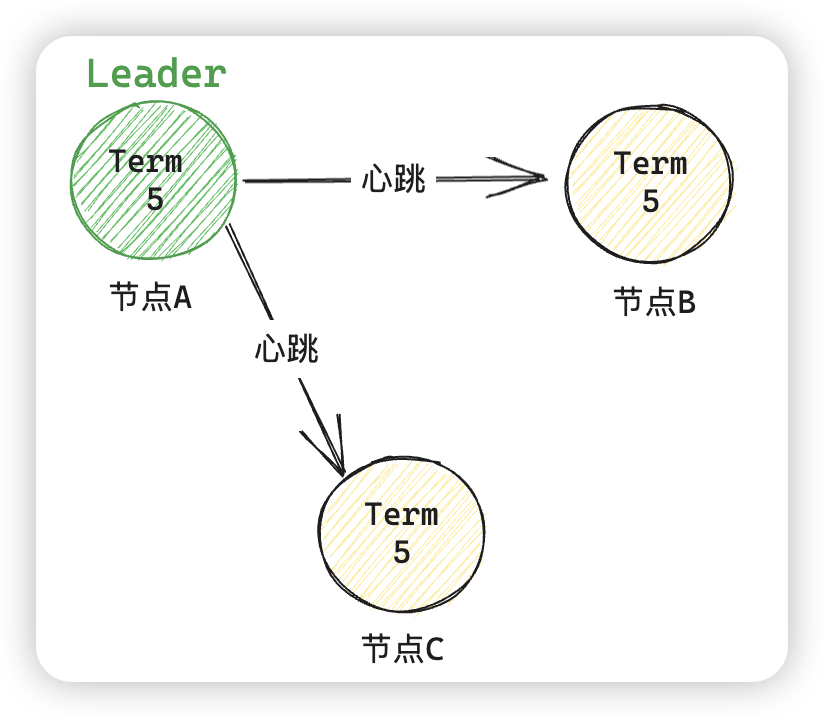
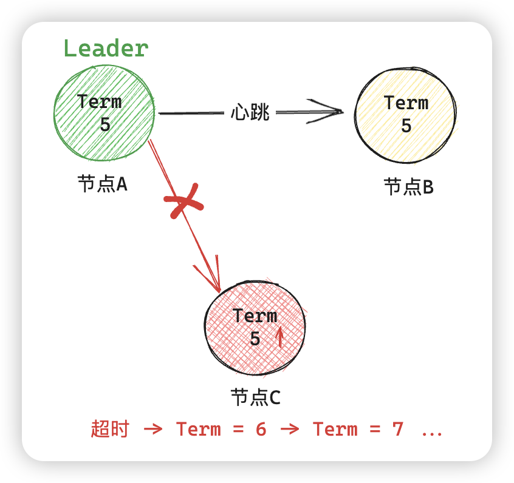
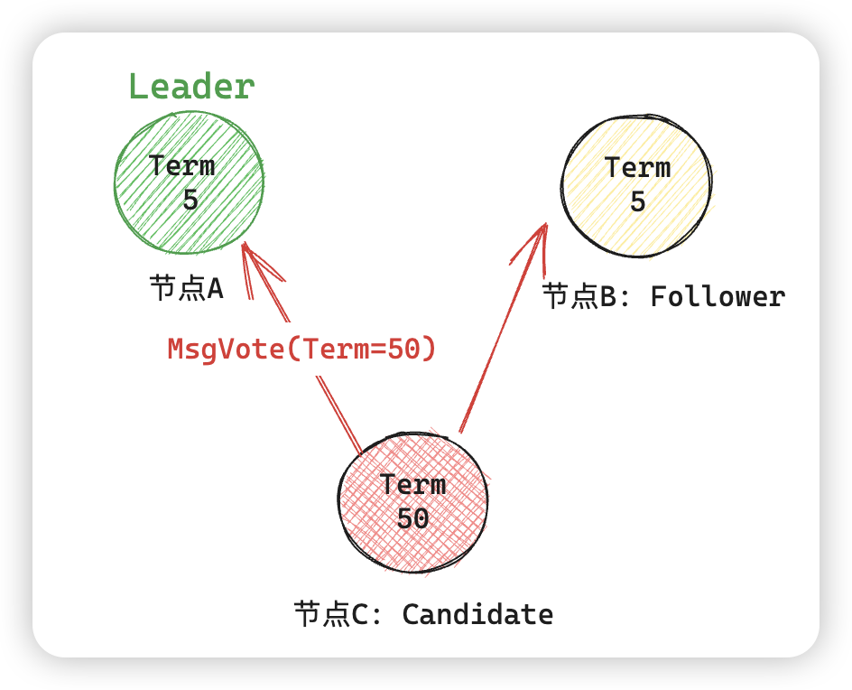
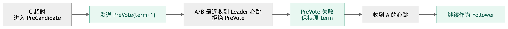
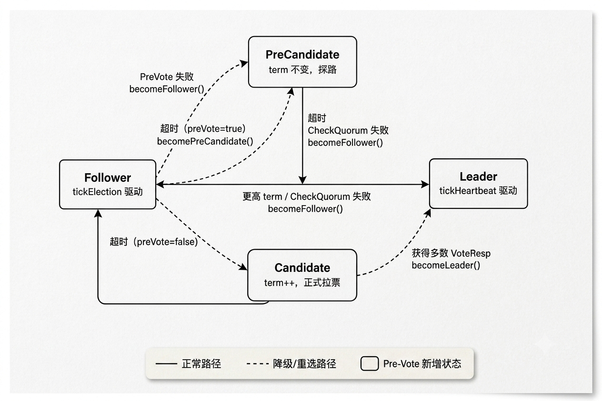

etcd Raft (二)：PreVote 机制
从这篇开始，我准备总结一些实际生产中的issue 和解决方案，这一篇主要聚焦于 Raft 选举中的 PreVote 机制。
在系统的介绍 PreVote 机制之前，需要先讲清楚这种机制解决了什么场景的问题。
1. 场景说明
假设现在我们有一个三节点的 etcd 集群，当前的任期 Term = 5。

当网络发生分区后，假设节点 C 与集群断开连接：

在网络恢复后，假设节点 C 自身的 Term 已经到了50，那么它就会向其他节点发送 Term = 50 的消息，然后节点 A 发现 C 的 Term 更大，因此 A 强制退位，导致整个集群进行新一轮选举，而这个期间，集群处于不可写状态。

这就是 etcd issue #9333 所描述的真实问题。etcd 维护者把这类节点叫做破坏性节点。那么在实际生产环境下，只要某个 etcd follower 的网络断开再恢复，就必然触发一次 leader 重选，Kubernetes 会因此抖动一下。
2. PreVote 的核心思想
为了解决这种场景带来的强制重新选举问题，就可以引入 PreVote 这种机制了，而这种机制的思想也比较简单：先问问自己能不能赢。
具体的做法就是：在真正自增 term、发起选举之前，先向其他节点问一句：“如果我现在发起选举，你们会投票给我吗？“只有得到多数人的肯定答复，才真正开始选举。
上一篇文章其实提过 Raft 论文中有三种角色：
- Leader
- Follower
- Candidate
而在引入 PreVote 之后，为了描述 PreVote 阶段，实际的工程实现中会增加另外一种角色：PreCandidate。
在有了这个临时状态角色后，当节点 C 重新加入进群后，它只需要经历如下的步骤：

2.1 新的选举状态机
加入 PreVote 后，etcd raft 的状态机从论文的三态变成了四态：

PreCandidate 是一个纯粹的过渡态，它存在的唯一目标就是在不改变任何持久化状态的前提下，探测自己是否有赢得选举的可能性。如果探测失败，节点悄悄退回 Follower，整个集群对此毫无感知。
2.2 etcd PreVote 的实现
PreVote 涉及三段代码的协作：
- 触发入口
- 候选人侧行为
- 投票人侧判断
把这三段串起来，整个机制就清晰了，下面看看 etcd 怎么实现的。
注：本文使用的 etcd 版本代码为：v3.6.11
2.2.1 触发入口
核心：选举超时后先发起 PreVote
入口在 tickElection 方法。当节点可被提升为 leader，且选举超时后，会给自己投递一个本地 MsgHup：
// vendor/go.etcd.io/raft/v3/raft.go:850
func (r *raft) tickElection() {
r.electionElapsed++
if r.promotable() && r.pastElectionTimeout() {
r.electionElapsed = 0
if err := r.Step(pb.Message{From: r.id, Type: pb.MsgHup}); err != nil {
r.logger.Debugf("error occurred during election: %v", err)
}
}
}
进一步，Step(MsgHup) 方法会根据 r.preVote 决定走预选举还是直接选举（其实就是一个配置了）：
// vendor/go.etcd.io/raft/v3/raft.go:1181
case pb.MsgHup:
if r.preVote {
r.hup(campaignPreElection)
} else {
r.hup(campaignElection)
}
hup 做一些前置检查：比如不能是 leader 等等。通过后才调用 campaign：
// vendor/go.etcd.io/raft/v3/raft.go:973
func (r *raft) hup(t CampaignType) {
if r.state == StateLeader {
return
}
if !r.promotable() {
return
}
if r.hasUnappliedConfChanges() {
return
}
r.campaign(t)
}
2.2.2 候选人侧行为
核心：先成为 PreCandidate，不增加 term
PreVote 的关键点是：节点进入 StatePreCandidate，但是不增加自己的 Term，也不写 Vote。
// vendor/go.etcd.io/raft/v3/raft.go:917
func (r *raft) becomePreCandidate() {
if r.state == StateLeader {
panic("invalid transition [leader -> pre-candidate]")
}
// Becoming a pre-candidate changes our step functions and state,
// but doesn't change anything else. In particular it does not increase
// r.Term or change r.Vote.
r.step = stepCandidate
r.trk.ResetVotes()
r.tick = r.tickElection
r.lead = None
r.state = StatePreCandidate
}
campaign(campaignPreElection) 会发送 MsgPreVote 给集群中其他的节点，消息里的 term 是 r.Term + 1，表示“如果我真的竞选，会用下一个 term”。但本地 r.Term 还没变。
// vendor/go.etcd.io/raft/v3/raft.go:1025
func (r *raft) campaign(t CampaignType) {
var term uint64
var voteMsg pb.MessageType
if t == campaignPreElection {
r.becomePreCandidate()
voteMsg = pb.MsgPreVote
// PreVote RPCs are sent for the next term before we've incremented r.Term.
term = r.Term + 1
} else {
r.becomeCandidate()
voteMsg = pb.MsgVote
term = r.Term
}
for _, id := range ids {
if id == r.id {
r.send(pb.Message{To: id, Term: term, Type: voteRespMsgType(voteMsg)})
continue
}
last := r.raftLog.lastEntryID()
r.send(pb.Message{
To: id, Term: term, Type: voteMsg,
Index: last.index, LogTerm: last.term,
})
}
}
收到多数 MsgPreVoteResp 后，stepCandidate 会把预选举升级成正式选举：
// vendor/go.etcd.io/raft/v3/raft.go:1666
func stepCandidate(r *raft, m pb.Message) error {
var myVoteRespType pb.MessageType
if r.state == StatePreCandidate {
myVoteRespType = pb.MsgPreVoteResp
} else {
myVoteRespType = pb.MsgVoteResp
}
switch m.Type {
case myVoteRespType:
gr, rj, res := r.poll(m.From, m.Type, !m.Reject)
switch res {
case quorum.VoteWon:
if r.state == StatePreCandidate {
r.campaign(campaignElection)
} else {
r.becomeLeader()
r.bcastAppend()
}
case quorum.VoteLost:
r.becomeFollower(r.Term, None)
}
}
return nil
}
2.2.3 投票人侧判断
核心：可以预投票，但不因 PreVote 提升本地 term
投票人收到 MsgPreVote 时，首先经过 Step 的 term 处理。这里最重要的是：
// vendor/go.etcd.io/raft/v3/raft.go:1107
case m.Type == pb.MsgPreVote:
// Never change our term in response to a PreVote
普通 MsgVote 带更高 term 会让接收方更新 term 并转 follower；真正是否投票在 MsgVote, MsgPreVote 的统一分支里:
// vendor/go.etcd.io/raft/v3/raft.go:1204
case pb.MsgVote, pb.MsgPreVote:
canVote := r.Vote == m.From ||
(r.Vote == None && r.lead == None) ||
(m.Type == pb.MsgPreVote && m.Term > r.Term)
lastID := r.raftLog.lastEntryID()
candLastID := entryID{term: m.LogTerm, index: m.Index}
if canVote && r.raftLog.isUpToDate(candLastID) {
r.send(pb.Message{
To: m.From,
Term: m.Term,
Type: voteRespMsgType(m.Type),
})
} else {
r.send(pb.Message{
To: m.From,
Term: r.Term,
Type: voteRespMsgType(m.Type),
Reject: true,
})
}
判断条件可以拆成两类：
-
是否可以投：
- 已经投给过这个节点；
- 或者当前 term 还没投票且不知道 leader；
- 或者消息是 MsgPreVote，且请求 term 是未来 term
-
候选人日志是否足够新：
- r.raftLog.isUpToDate(candLastID)
如果开启了 CheckQuorum，且当前 leader 租期还没有过期，还会直接忽略更高 term 的 MsgVote / MsgPreVote，避免在 leader 仍然活跃时被打扰：
// vendor/go.etcd.io/raft/v3/raft.go:1093
if m.Type == pb.MsgVote || m.Type == pb.MsgPreVote {
force := bytes.Equal(m.Context, []byte(campaignTransfer))
inLease := r.checkQuorum && r.lead != None && r.electionElapsed < r.electionTimeout
if !force && inLease {
return nil
}
}
3. PreVote 为什么要和 CheckQuorum 一起看
在上面看源码的过程中，也能注意到 PreVote 和 CheckQuorum 机制还是存在关联的，但是严格上来说，它们约束的内容是不相同的：
-
PreVote 约束的是新加入集群的节点，当一个 follower 选举超时后，并不会立刻把自己的 term 加一并发起正式投票，而是先进入
StatePreCandidate，发送MsgPreVote探测自己是否可能拿到多数节点的支持。接收方即使看到MsgPreVote携带的是未来 term，也不会更新自己的本地 term。这样，一个被网络隔离的节点即使反复超时，也不会仅凭更高 term 干扰当前 leader。 -
CheckQuorum 约束的是现在的 leader：leader 会周期性检查自己是否还能和多数派通信；如果多数派不活跃，就主动退回 follower。同时，在 follower 侧，如果开启了 CheckQuorum，并且当前 leader lease 还没有过期，那么它会忽略普通的
MsgVote和MsgPreVote请求。换句话说，只要 follower 最近还听到过 leader，它就不会轻易响应新的竞选者。
这两者配合使用的时候，选举就会变得更保守：
- 少数派节点不会因为超时就抬高 term，扰乱多数派中的 leader；
- 多数派中的 follower 在 leader lease 内不会响应新的竞选请求；
- leader 如果失去多数派，也会通过 CheckQuorum 主动下台。
这种设计牺牲了一部分故障切换速度。因为正常的选举现在可能要先经历一轮 PreVote，再进入正式 Vote；如果 CheckQuorum 的 leader lease 尚未过期，新的竞选者还需要等待 lease 失效后才更容易拿到响应。但换来的好处是，集群在网络抖动、节点短暂隔离和旧节点重新加入时，不会轻易发生 term 膨胀和无意义的 leader 退位。